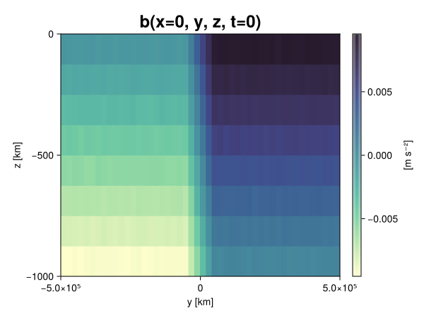
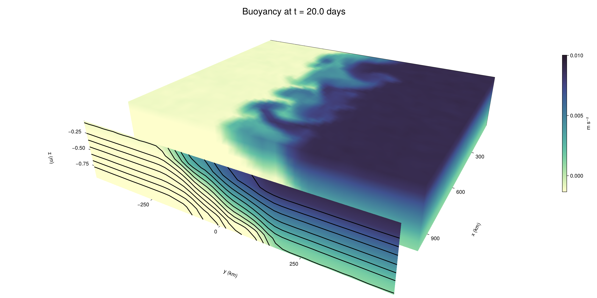

Baroclinic adjustment
In this example, we simulate the evolution and equilibration of a baroclinically unstable front.
Install dependencies
First let's make sure we have all required packages installed.
using Pkg
pkg"add Oceananigans, CairoMakie"using Oceananigans
using Oceananigans.UnitsGrid
We use a three-dimensional channel that is periodic in the x direction:
Lx = 1000kilometers # east-west extent [m]
Ly = 1000kilometers # north-south extent [m]
Lz = 1kilometers # depth [m]
grid = RectilinearGrid(size = (48, 48, 8),
x = (0, Lx),
y = (-Ly/2, Ly/2),
z = (-Lz, 0),
topology = (Periodic, Bounded, Bounded))48×48×8 RectilinearGrid{Float64, Periodic, Bounded, Bounded} on CPU with 3×3×3 halo
├── Periodic x ∈ [0.0, 1.0e6) regularly spaced with Δx=20833.3
├── Bounded y ∈ [-500000.0, 500000.0] regularly spaced with Δy=20833.3
└── Bounded z ∈ [-1000.0, 0.0] regularly spaced with Δz=125.0Model
We built a HydrostaticFreeSurfaceModel with an ImplicitFreeSurface solver. Regarding Coriolis, we use a beta-plane centered at 45° South.
model = HydrostaticFreeSurfaceModel(; grid,
coriolis = BetaPlane(latitude = -45),
buoyancy = BuoyancyTracer(),
tracers = :b,
momentum_advection = WENO(),
tracer_advection = WENO())HydrostaticFreeSurfaceModel{CPU, RectilinearGrid}(time = 0 seconds, iteration = 0)
├── grid: 48×48×8 RectilinearGrid{Float64, Periodic, Bounded, Bounded} on CPU with 3×3×3 halo
├── timestepper: QuasiAdamsBashforth2TimeStepper
├── tracers: b
├── closure: Nothing
├── buoyancy: BuoyancyTracer with ĝ = NegativeZDirection()
├── free surface: ImplicitFreeSurface with gravitational acceleration 9.80665 m s⁻²
│ └── solver: FFTImplicitFreeSurfaceSolver
├── advection scheme:
│ ├── momentum: WENO reconstruction order 5
│ └── b: WENO reconstruction order 5
└── coriolis: BetaPlane{Float64}We start our simulation from rest with a baroclinically unstable buoyancy distribution. We use ramp(y, Δy), defined below, to specify a front with width Δy and horizontal buoyancy gradient M². We impose the front on top of a vertical buoyancy gradient N² and a bit of noise.
"""
ramp(y, Δy)
Linear ramp from 0 to 1 between -Δy/2 and +Δy/2.
For example:
```
y < -Δy/2 => ramp = 0
-Δy/2 < y < -Δy/2 => ramp = y / Δy
y > Δy/2 => ramp = 1
```
"""
ramp(y, Δy) = min(max(0, y/Δy + 1/2), 1)
N² = 1e-5 # [s⁻²] buoyancy frequency / stratification
M² = 1e-7 # [s⁻²] horizontal buoyancy gradient
Δy = 100kilometers # width of the region of the front
Δb = Δy * M² # buoyancy jump associated with the front
ϵb = 1e-2 * Δb # noise amplitude
bᵢ(x, y, z) = N² * z + Δb * ramp(y, Δy) + ϵb * randn()
set!(model, b=bᵢ)Let's visualize the initial buoyancy distribution.
using CairoMakie
# Build coordinates with units of kilometers
x, y, z = 1e-3 .* nodes(grid, (Center(), Center(), Center()))
b = model.tracers.b
fig, ax, hm = heatmap(view(b, 1, :, :),
colormap = :deep,
axis = (xlabel = "y [km]",
ylabel = "z [km]",
title = "b(x=0, y, z, t=0)",
titlesize = 24))
Colorbar(fig[1, 2], hm, label = "[m s⁻²]")
fig
Simulation
Now let's build a Simulation.
simulation = Simulation(model, Δt=20minutes, stop_time=20days)Simulation of HydrostaticFreeSurfaceModel{CPU, RectilinearGrid}(time = 0 seconds, iteration = 0)
├── Next time step: 20 minutes
├── Elapsed wall time: 0 seconds
├── Wall time per iteration: NaN days
├── Stop time: 20 days
├── Stop iteration : Inf
├── Wall time limit: Inf
├── Callbacks: OrderedDict with 4 entries:
│ ├── stop_time_exceeded => Callback of stop_time_exceeded on IterationInterval(1)
│ ├── stop_iteration_exceeded => Callback of stop_iteration_exceeded on IterationInterval(1)
│ ├── wall_time_limit_exceeded => Callback of wall_time_limit_exceeded on IterationInterval(1)
│ └── nan_checker => Callback of NaNChecker for u on IterationInterval(100)
├── Output writers: OrderedDict with no entries
└── Diagnostics: OrderedDict with no entriesWe add a TimeStepWizard callback to adapt the simulation's time-step,
conjure_time_step_wizard!(simulation, IterationInterval(20), cfl=0.2, max_Δt=20minutes)Also, we add a callback to print a message about how the simulation is going,
using Printf
wall_clock = Ref(time_ns())
function print_progress(sim)
u, v, w = model.velocities
progress = 100 * (time(sim) / sim.stop_time)
elapsed = (time_ns() - wall_clock[]) / 1e9
@printf("[%05.2f%%] i: %d, t: %s, wall time: %s, max(u): (%6.3e, %6.3e, %6.3e) m/s, next Δt: %s\n",
progress, iteration(sim), prettytime(sim), prettytime(elapsed),
maximum(abs, u), maximum(abs, v), maximum(abs, w), prettytime(sim.Δt))
wall_clock[] = time_ns()
return nothing
end
add_callback!(simulation, print_progress, IterationInterval(100))Diagnostics/Output
Here, we save the buoyancy, $b$, at the edges of our domain as well as the zonal ($x$) average of buoyancy.
u, v, w = model.velocities
ζ = ∂x(v) - ∂y(u)
B = Average(b, dims=1)
U = Average(u, dims=1)
V = Average(v, dims=1)
filename = "baroclinic_adjustment"
save_fields_interval = 0.5day
slicers = (east = (grid.Nx, :, :),
north = (:, grid.Ny, :),
bottom = (:, :, 1),
top = (:, :, grid.Nz))
for side in keys(slicers)
indices = slicers[side]
simulation.output_writers[side] = JLD2OutputWriter(model, (; b, ζ);
filename = filename * "_$(side)_slice",
schedule = TimeInterval(save_fields_interval),
overwrite_existing = true,
indices)
end
simulation.output_writers[:zonal] = JLD2OutputWriter(model, (; b=B, u=U, v=V);
filename = filename * "_zonal_average",
schedule = TimeInterval(save_fields_interval),
overwrite_existing = true)JLD2OutputWriter scheduled on TimeInterval(12 hours):
├── filepath: baroclinic_adjustment_zonal_average.jld2
├── 3 outputs: (b, u, v)
├── array type: Array{Float64}
├── including: [:grid, :coriolis, :buoyancy, :closure]
├── file_splitting: NoFileSplitting
└── file size: 31.6 KiBNow we're ready to run.
@info "Running the simulation..."
run!(simulation)
@info "Simulation completed in " * prettytime(simulation.run_wall_time)[ Info: Running the simulation...
[ Info: Initializing simulation...
[00.00%] i: 0, t: 0 seconds, wall time: 32.002 seconds, max(u): (0.000e+00, 0.000e+00, 0.000e+00) m/s, next Δt: 20 minutes
[ Info: ... simulation initialization complete (28.847 seconds)
[ Info: Executing initial time step...
[ Info: ... initial time step complete (19.653 seconds).
[06.94%] i: 100, t: 1.389 days, wall time: 39.408 seconds, max(u): (1.269e-01, 1.168e-01, 1.648e-03) m/s, next Δt: 20 minutes
[13.89%] i: 200, t: 2.778 days, wall time: 1.112 seconds, max(u): (2.124e-01, 1.669e-01, 1.726e-03) m/s, next Δt: 20 minutes
[20.83%] i: 300, t: 4.167 days, wall time: 965.665 ms, max(u): (3.044e-01, 2.078e-01, 1.708e-03) m/s, next Δt: 20 minutes
[27.78%] i: 400, t: 5.556 days, wall time: 959.967 ms, max(u): (3.872e-01, 2.778e-01, 1.725e-03) m/s, next Δt: 20 minutes
[34.72%] i: 500, t: 6.944 days, wall time: 1.029 seconds, max(u): (4.629e-01, 3.982e-01, 1.926e-03) m/s, next Δt: 20 minutes
[41.67%] i: 600, t: 8.333 days, wall time: 1.241 seconds, max(u): (5.905e-01, 5.646e-01, 2.172e-03) m/s, next Δt: 20 minutes
[48.61%] i: 700, t: 9.722 days, wall time: 1.069 seconds, max(u): (8.208e-01, 7.419e-01, 2.842e-03) m/s, next Δt: 20 minutes
[55.56%] i: 800, t: 11.111 days, wall time: 1.069 seconds, max(u): (1.198e+00, 1.179e+00, 3.791e-03) m/s, next Δt: 20 minutes
[62.50%] i: 900, t: 12.500 days, wall time: 1.034 seconds, max(u): (1.338e+00, 1.307e+00, 5.228e-03) m/s, next Δt: 20 minutes
[69.44%] i: 1000, t: 13.889 days, wall time: 1.082 seconds, max(u): (1.336e+00, 1.126e+00, 4.249e-03) m/s, next Δt: 20 minutes
[76.39%] i: 1100, t: 15.278 days, wall time: 1.024 seconds, max(u): (1.409e+00, 1.058e+00, 4.047e-03) m/s, next Δt: 20 minutes
[83.33%] i: 1200, t: 16.667 days, wall time: 1.111 seconds, max(u): (1.402e+00, 9.660e-01, 3.784e-03) m/s, next Δt: 20 minutes
[90.28%] i: 1300, t: 18.056 days, wall time: 1.348 seconds, max(u): (1.480e+00, 9.603e-01, 3.021e-03) m/s, next Δt: 20 minutes
[97.22%] i: 1400, t: 19.444 days, wall time: 990.075 ms, max(u): (1.398e+00, 1.093e+00, 4.079e-03) m/s, next Δt: 20 minutes
[ Info: Simulation is stopping after running for 1.121 minutes.
[ Info: Simulation time 20 days equals or exceeds stop time 20 days.
[ Info: Simulation completed in 1.122 minutes
Visualization
All that's left is to make a pretty movie. Actually, we make two visualizations here. First, we illustrate how to make a 3D visualization with Makie's Axis3 and Makie.surface. Then we make a movie in 2D. We use CairoMakie in this example, but note that using GLMakie is more convenient on a system with OpenGL, as figures will be displayed on the screen.
using CairoMakieThree-dimensional visualization
We load the saved buoyancy output on the top, north, and east surface as FieldTimeSerieses.
filename = "baroclinic_adjustment"
sides = keys(slicers)
slice_filenames = NamedTuple(side => filename * "_$(side)_slice.jld2" for side in sides)
b_timeserieses = (east = FieldTimeSeries(slice_filenames.east, "b"),
north = FieldTimeSeries(slice_filenames.north, "b"),
top = FieldTimeSeries(slice_filenames.top, "b"))
B_timeseries = FieldTimeSeries(filename * "_zonal_average.jld2", "b")
times = B_timeseries.times
grid = B_timeseries.grid48×48×8 RectilinearGrid{Float64, Periodic, Bounded, Bounded} on CPU with 3×3×3 halo
├── Periodic x ∈ [0.0, 1.0e6) regularly spaced with Δx=20833.3
├── Bounded y ∈ [-500000.0, 500000.0] regularly spaced with Δy=20833.3
└── Bounded z ∈ [-1000.0, 0.0] regularly spaced with Δz=125.0We build the coordinates. We rescale horizontal coordinates to kilometers.
xb, yb, zb = nodes(b_timeserieses.east)
xb = xb ./ 1e3 # convert m -> km
yb = yb ./ 1e3 # convert m -> km
Nx, Ny, Nz = size(grid)
x_xz = repeat(x, 1, Nz)
y_xz_north = y[end] * ones(Nx, Nz)
z_xz = repeat(reshape(z, 1, Nz), Nx, 1)
x_yz_east = x[end] * ones(Ny, Nz)
y_yz = repeat(y, 1, Nz)
z_yz = repeat(reshape(z, 1, Nz), grid.Ny, 1)
x_xy = x
y_xy = y
z_xy_top = z[end] * ones(grid.Nx, grid.Ny)Then we create a 3D axis. We use zonal_slice_displacement to control where the plot of the instantaneous zonal average flow is located.
fig = Figure(size = (1600, 800))
zonal_slice_displacement = 1.2
ax = Axis3(fig[2, 1],
aspect=(1, 1, 1/5),
xlabel = "x (km)",
ylabel = "y (km)",
zlabel = "z (m)",
xlabeloffset = 100,
ylabeloffset = 100,
zlabeloffset = 100,
limits = ((x[1], zonal_slice_displacement * x[end]), (y[1], y[end]), (z[1], z[end])),
elevation = 0.45,
azimuth = 6.8,
xspinesvisible = false,
zgridvisible = false,
protrusions = 40,
perspectiveness = 0.7)Axis3()We use data from the final savepoint for the 3D plot. Note that this plot can easily be animated by using Makie's Observable. To dive into Observables, check out Makie.jl's Documentation.
n = length(times)41Now let's make a 3D plot of the buoyancy and in front of it we'll use the zonally-averaged output to plot the instantaneous zonal-average of the buoyancy.
b_slices = (east = interior(b_timeserieses.east[n], 1, :, :),
north = interior(b_timeserieses.north[n], :, 1, :),
top = interior(b_timeserieses.top[n], :, :, 1))
# Zonally-averaged buoyancy
B = interior(B_timeseries[n], 1, :, :)
clims = 1.1 .* extrema(b_timeserieses.top[n][:])
kwargs = (colorrange=clims, colormap=:deep, shading=NoShading)
surface!(ax, x_yz_east, y_yz, z_yz; color = b_slices.east, kwargs...)
surface!(ax, x_xz, y_xz_north, z_xz; color = b_slices.north, kwargs...)
surface!(ax, x_xy, y_xy, z_xy_top; color = b_slices.top, kwargs...)
sf = surface!(ax, zonal_slice_displacement .* x_yz_east, y_yz, z_yz; color = B, kwargs...)
contour!(ax, y, z, B; transformation = (:yz, zonal_slice_displacement * x[end]),
levels = 15, linewidth = 2, color = :black)
Colorbar(fig[2, 2], sf, label = "m s⁻²", height = Relative(0.4), tellheight=false)
title = "Buoyancy at t = " * string(round(times[n] / day, digits=1)) * " days"
fig[1, 1:2] = Label(fig, title; fontsize = 24, tellwidth = false, padding = (0, 0, -120, 0))
rowgap!(fig.layout, 1, Relative(-0.2))
colgap!(fig.layout, 1, Relative(-0.1))
save("baroclinic_adjustment_3d.png", fig)
Two-dimensional movie
We make a 2D movie that shows buoyancy $b$ and vertical vorticity $ζ$ at the surface, as well as the zonally-averaged zonal and meridional velocities $U$ and $V$ in the $(y, z)$ plane. First we load the FieldTimeSeries and extract the additional coordinates we'll need for plotting
ζ_timeseries = FieldTimeSeries(slice_filenames.top, "ζ")
U_timeseries = FieldTimeSeries(filename * "_zonal_average.jld2", "u")
B_timeseries = FieldTimeSeries(filename * "_zonal_average.jld2", "b")
V_timeseries = FieldTimeSeries(filename * "_zonal_average.jld2", "v")
xζ, yζ, zζ = nodes(ζ_timeseries)
yv = ynodes(V_timeseries)
xζ = xζ ./ 1e3 # convert m -> km
yζ = yζ ./ 1e3 # convert m -> km
yv = yv ./ 1e3 # convert m -> km49-element Vector{Float64}:
-500.0
-479.1666666666667
-458.3333333333333
-437.5
-416.6666666666667
-395.8333333333333
-375.0
-354.1666666666667
-333.3333333333333
-312.5
-291.6666666666667
-270.8333333333333
-250.0
-229.16666666666666
-208.33333333333334
-187.5
-166.66666666666666
-145.83333333333334
-125.0
-104.16666666666667
-83.33333333333333
-62.5
-41.666666666666664
-20.833333333333332
0.0
20.833333333333332
41.666666666666664
62.5
83.33333333333333
104.16666666666667
125.0
145.83333333333334
166.66666666666666
187.5
208.33333333333334
229.16666666666666
250.0
270.8333333333333
291.6666666666667
312.5
333.3333333333333
354.1666666666667
375.0
395.8333333333333
416.6666666666667
437.5
458.3333333333333
479.1666666666667
500.0Next, we set up a plot with 4 panels. The top panels are large and square, while the bottom panels get a reduced aspect ratio through rowsize!.
set_theme!(Theme(fontsize=24))
fig = Figure(size=(1800, 1000))
axb = Axis(fig[1, 2], xlabel="x (km)", ylabel="y (km)", aspect=1)
axζ = Axis(fig[1, 3], xlabel="x (km)", ylabel="y (km)", aspect=1, yaxisposition=:right)
axu = Axis(fig[2, 2], xlabel="y (km)", ylabel="z (m)")
axv = Axis(fig[2, 3], xlabel="y (km)", ylabel="z (m)", yaxisposition=:right)
rowsize!(fig.layout, 2, Relative(0.3))To prepare a plot for animation, we index the timeseries with an Observable,
n = Observable(1)
b_top = @lift interior(b_timeserieses.top[$n], :, :, 1)
ζ_top = @lift interior(ζ_timeseries[$n], :, :, 1)
U = @lift interior(U_timeseries[$n], 1, :, :)
V = @lift interior(V_timeseries[$n], 1, :, :)
B = @lift interior(B_timeseries[$n], 1, :, :)Observable([-0.009385479373210678 -0.00812930661745289 -0.00688963394638821 -0.005609838477632152 -0.004369628715085168 -0.0031261067382816875 -0.0018802771438094091 -0.0006231456491654002; -0.009400209855001203 -0.008155488504069565 -0.006909193296300441 -0.005605249600199549 -0.004373213572280629 -0.003131330222382178 -0.0018992708922343563 -0.0006188442023908105; -0.009376246461156361 -0.00810754793623262 -0.006881316843341566 -0.00561304463146996 -0.004387795893378961 -0.003113350544258483 -0.0018765857206005418 -0.0006384298524851591; -0.009390117038700858 -0.008128928055511303 -0.006872091855489835 -0.005635544027341777 -0.004382960552598156 -0.003101209339328698 -0.0018705191559212156 -0.0006415871613455002; -0.009346656485759604 -0.00811322553823858 -0.0068751133890686345 -0.005639338630132784 -0.004383684965308885 -0.003116031550448317 -0.0018824526911273686 -0.0006111019464320311; -0.009369170801859889 -0.008116993376950345 -0.0068788361730950836 -0.005610253618043161 -0.00436781165081639 -0.0031285414236011263 -0.0018853661793115002 -0.0006365604192030474; -0.009402777111826913 -0.008121715231417822 -0.0068840600974658895 -0.005620027996237155 -0.004370258539968914 -0.0031083112283155716 -0.0018718946596065482 -0.0006686471455687833; -0.009364735306106473 -0.00811465488198934 -0.006862282789213432 -0.0056218955766386206 -0.004390636961672651 -0.0031260103115981867 -0.0018826239074252158 -0.0006236209258939585; -0.009352558561823 -0.008115167544984703 -0.006874466376812129 -0.005626558559062638 -0.004372547324754504 -0.0031234724313333913 -0.0018922756255276502 -0.000603745734150201; -0.009360333793727358 -0.00813575153087296 -0.006877035826705004 -0.005630699930799722 -0.0043782980107755646 -0.003160049440121253 -0.0018914573627620166 -0.000638085211357538; -0.009404446354354421 -0.008129140625226941 -0.006877604954493709 -0.005632717975368919 -0.004373106191220335 -0.0031225413276462417 -0.0018888306668032962 -0.0006221617984797072; -0.00938791926906152 -0.008152422051589751 -0.00688576966595069 -0.005625037504419274 -0.004383491095231826 -0.0031254247474798145 -0.0018713794563693109 -0.0006121147148614984; -0.009378686836240378 -0.00810633578640556 -0.006894981666760642 -0.005610827018217276 -0.004385700546013517 -0.003123228742045374 -0.001869425985325403 -0.0006288830318693248; -0.009361073660832784 -0.008138103673074513 -0.006885552270394393 -0.005608394257513336 -0.004401711033291498 -0.003143697718040262 -0.0018345022493225166 -0.0006393342462862585; -0.00937839261732889 -0.008118199980806538 -0.006877573444110646 -0.0056128056481145735 -0.004359532745704458 -0.003134562214946169 -0.0018787827896897752 -0.0006050362503443521; -0.009378275526582226 -0.008141469308274092 -0.0068860561134919855 -0.005605386253585645 -0.0043802266996349 -0.0031372394826801506 -0.0018738321893209742 -0.0006007647206264885; -0.009388163780280045 -0.008107090218788228 -0.00688021691099231 -0.005607341642732362 -0.004376654867214543 -0.0031518670173687033 -0.0019096396204188442 -0.0006552416642589838; -0.00935724211936035 -0.008118727506337891 -0.0068771452047450485 -0.005626636656464735 -0.004367479105570452 -0.003100751822281611 -0.0018717057688774862 -0.0006427919212909412; -0.009366811411816623 -0.008095680280996864 -0.0068851201448386174 -0.005624052271435145 -0.004388405992839964 -0.003124338189083449 -0.0018609866449601443 -0.0006338582146258295; -0.009391677727206898 -0.008157955358477338 -0.006879549189672784 -0.005628547316109625 -0.0043649611738315825 -0.003108088160955929 -0.0018763789995475493 -0.0006193142263491774; -0.009363232548097691 -0.008093091884789625 -0.006874817218004834 -0.0056382621884710745 -0.004378823733670605 -0.003146939445785602 -0.001890918295526686 -0.0006502593791020055; -0.009380029257254676 -0.0081024708434728 -0.0068819831760051535 -0.005614982445309277 -0.004372327108646227 -0.003129188679895606 -0.001862464548703522 -0.0006257836453542752; -0.00749594864347454 -0.006244394132879771 -0.005004520845560505 -0.0037539628989379284 -0.0025129524284369033 -0.0012361391274298276 -1.9435460655275528e-5 0.0012438659173018645; -0.005413402802038148 -0.004165596744745502 -0.0029416891319401736 -0.0016676439355325211 -0.0004007502537192442 0.0008453789551415907 0.002077904768166732 0.003357100172281894; -0.00333611994793289 -0.0020657119171008233 -0.0008291833767284301 0.00042744460798612864 0.0016595285600285396 0.0029298761120740134 0.004147964064290279 0.005435380605944807; -0.0012441534365987543 -2.734685694799121e-5 0.0012345748016633342 0.002517708280140605 0.0037380104213935467 0.004995953925829977 0.006256329531566784 0.007494059324638078; 0.0006362402120366671 0.0018789047651353921 0.003136586826646233 0.004389528804056073 0.005628708225493713 0.0068672679344423775 0.008148093970204053 0.009379382534814346; 0.0006252832391752046 0.0019015294764203959 0.0031678667883732812 0.004362984140804887 0.005645512616246359 0.006843020639143062 0.008131130211810915 0.009354546681098566; 0.0006305340967229582 0.0018839204480647 0.003124952703116434 0.004362484007775128 0.005631756134443923 0.0068711223577202244 0.008133851107911459 0.009382444500369319; 0.0006183582906264486 0.0018938439062215755 0.0031341028078103964 0.004359146577803653 0.00562363813836982 0.006869443811963013 0.008151162943652007 0.009381991870861734; 0.000632770127963504 0.0018941537341259033 0.00314261311193198 0.004358524042857235 0.005613011952902061 0.00690585742949282 0.00813287505241697 0.009399949124312098; 0.0006410715629230315 0.0018588002869185966 0.0031563658568657545 0.004366510180791406 0.005614638952876845 0.006852712199725733 0.008112936324916454 0.009386898028501038; 0.0006253720017164148 0.0018827163509941146 0.0031281384065822426 0.004366855536595803 0.005638168024387682 0.006880823947300923 0.008121718410046505 0.00936281863564506; 0.0006433242420513315 0.0018599021432944556 0.003129822269492124 0.00436680525526489 0.005598973516721198 0.00686122916002484 0.00815650534884802 0.009366220352268577; 0.0005948893721480482 0.0018657522593720367 0.0031510430488812225 0.0043617343896191 0.00561378967577057 0.006875603845294981 0.008122378737749349 0.009371946397426905; 0.0006119254123473811 0.0018739724500906484 0.0031077166967729566 0.004384426639686024 0.005637672358493841 0.006898764948053295 0.008111711859787674 0.00938210778979942; 0.0005896873380201429 0.001856803027686849 0.0031194529674007025 0.004358589116122733 0.005602460313863303 0.006875918312248981 0.008131013834274994 0.009379015153176415; 0.0006336140263150687 0.0018659375087641563 0.003098954145064453 0.00438292270492541 0.005604108847793605 0.006879136346810741 0.008101415483473111 0.00937212881586951; 0.0006434430837307157 0.001866712223514675 0.0031198777629188527 0.0043626828475365476 0.005658768803316693 0.006856563278462124 0.00811246094858535 0.00939824973996572; 0.0006231460523965481 0.0018544119408811484 0.0031307230287447724 0.004373058779885887 0.0056200947469643115 0.006877333796546835 0.008126983689184712 0.009385849529001348; 0.0006154096088121611 0.001875498972288548 0.0031185432152310718 0.004373761498062768 0.005624065299702545 0.006881940343816795 0.008141395195090951 0.009379407263631229; 0.0006421968842210729 0.00187838123563505 0.0031268123273404703 0.004390504696425909 0.005607850894299109 0.006886917234927924 0.008137172722052997 0.009382476793674648; 0.0006010528872908569 0.0018696171816948183 0.0031072126292416694 0.004360548876189051 0.005639616898893914 0.006867256419842438 0.008120044786276101 0.009391535753916045; 0.0006157867926350917 0.0018567706933669572 0.0031372449642993647 0.004377153859698773 0.005609639856525704 0.006869184641011574 0.008131845745355705 0.0093678663143993; 0.0006436465797040701 0.0019133151844067525 0.0031216234251088214 0.004391404753338647 0.00561580369948371 0.00688697615591363 0.008107381145420256 0.0093783766783487; 0.0006253496589518945 0.0018505533421316323 0.0031471209796192132 0.004373608547404588 0.00561118320960008 0.006882204118799858 0.008115725084066418 0.009384341772998597; 0.0006329757767370177 0.0018904920032139234 0.003142879828072606 0.004369051416438413 0.005617048664236081 0.006864845560845988 0.008125510034477588 0.009372983158689523; 0.0006154626575052284 0.0018468061190403775 0.003127713140234202 0.004372600477908575 0.005631097744134103 0.00688307458108806 0.008094251392785108 0.009351862986355555])
and then build our plot:
hm = heatmap!(axb, xb, yb, b_top, colorrange=(0, Δb), colormap=:thermal)
Colorbar(fig[1, 1], hm, flipaxis=false, label="Surface b(x, y) (m s⁻²)")
hm = heatmap!(axζ, xζ, yζ, ζ_top, colorrange=(-5e-5, 5e-5), colormap=:balance)
Colorbar(fig[1, 4], hm, label="Surface ζ(x, y) (s⁻¹)")
hm = heatmap!(axu, yb, zb, U; colorrange=(-5e-1, 5e-1), colormap=:balance)
Colorbar(fig[2, 1], hm, flipaxis=false, label="Zonally-averaged U(y, z) (m s⁻¹)")
contour!(axu, yb, zb, B; levels=15, color=:black)
hm = heatmap!(axv, yv, zb, V; colorrange=(-1e-1, 1e-1), colormap=:balance)
Colorbar(fig[2, 4], hm, label="Zonally-averaged V(y, z) (m s⁻¹)")
contour!(axv, yb, zb, B; levels=15, color=:black)Finally, we're ready to record the movie.
frames = 1:length(times)
record(fig, filename * ".mp4", frames, framerate=8) do i
n[] = i
endThis page was generated using Literate.jl.